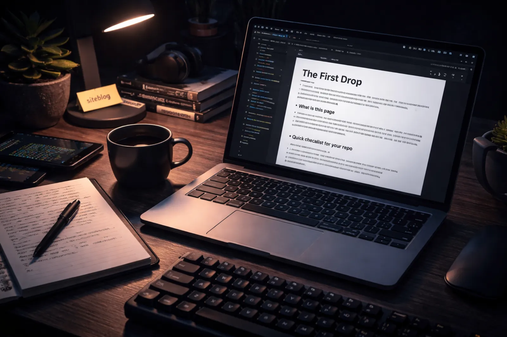

What is this page?
This is a small test blog page you can push to a GitHub repo and publish with GitHub Pages. Your app can detect the repo using the siteblog topic, show the card with main_image.webp, and open this page inside a modal iframe.
Keep it boring, keep it reliable
The goal is not fancy animations. The goal is that it loads fast, reads well, and renders consistently. You can use this as a template for every blog post: same structure, different content.
Tiny tip
In GitHub repo settings, set Homepage to your GitHub Pages URL. That is what the modal loads.
Quick checklist for your repo
- Add topic: siteblog
- Put main_image.webp in repo root
- Enable GitHub Pages from the deploy branch
- Set Homepage to the live URL
Next steps
Replace this text with your real blog content: project updates, tutorials, breakdowns, and experiments. Keep headings short and paragraphs small for readability.